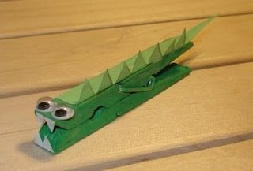

Small Office Home Office - Clothespin Crocodile
Clothespin Crocodile
Turn those cold drink or water bottles into pretty vases and make your home go green, in more ways than one!

What waste you need:
- Wooden clothes-pin
- Glue
- Scissors
- White paper
- Green paper
- Felt pen or marker
- Green paint
What to do out of these:
- Paint the wooden clothes-pin green.
- Draw teeth on white paper and cut them. Stick the teeth on both sides of the clip.
- Draw eyes or use googly eyes and draw nostrils with the black marker on the top of the clip, above where the teeth are stuck.
- Use light green paper to create the scales of the crocodile.
- Stick it along the length of the clothes-pin.
- Cute crocodile is ready!
Go Back
Home
Credits:
https://sheroes.com/articles/best-out-of-waste-ideas/NjkzNw==